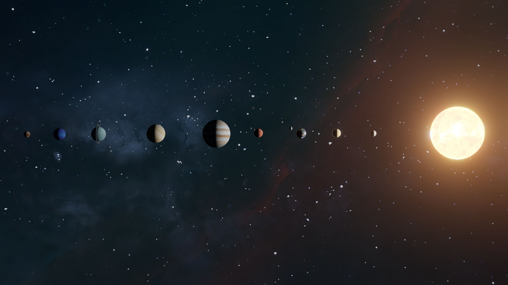

Загальний вигляд Сонячної системи

Сонце — серце нашої системи
Сонце — це центральна і єдина зоря Сонячної системи. Воно становить понад 99,8% від загальної маси всієї системи. Завдяки його гравітації планети утримуються на своїх орбітах, а світло і тепло дають життя на Землі.
8 планет Сонячної системи
У порядку віддалення від Сонця:
- Меркурій — найменша планета, розташована найближче до Сонця. Має великі перепади температур.
- Венера — найгарячіша планета через густу атмосферу, що створює сильний парниковий ефект.
- Земля — наша рідна планета, єдина відома у Всесвіті, де існує життя та рідка вода на поверхні.
- Марс — «Червона планета», відома своїми величезними вулканами та каньйонами.
- Юпітер — найбільша планета Сонячної системи, газовий гігант із відомою Великою червоною плямою.
- Сатурн — газовий гігант, відомий своєю вражаючою системою яскравих кілець із льоду та каміння.
- Уран — крижаний гігант блакитного кольору, який обертається навколо Сонця ніби «лежачи на боці».
- Нептун — найвіддаленіша від Сонця планета, де дмуть найсильніші вітри в Сонячній системі.